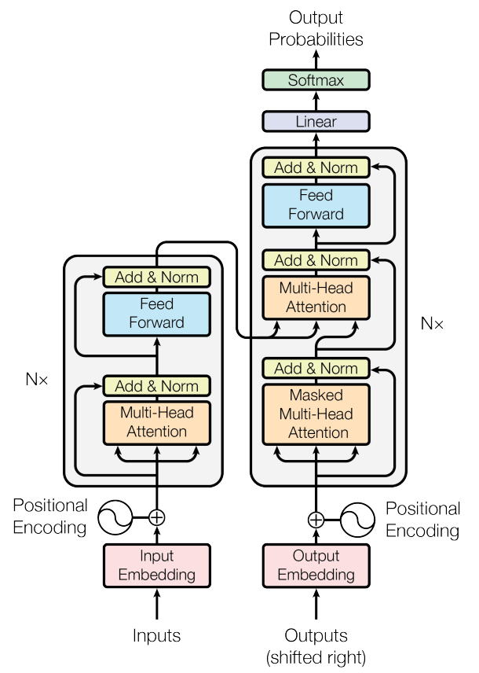

Transformers
The transformer is an architecture built on the self-attention mechanism that was introduced in the seminal paper Attention is all you need (Vaswani, et al., 2017) as a simpler alternative to complex recurrent and convolutional structures for sequence transduction.

The proposed transformer comprised a series of encoder and decoder stacks, where the encoder maps an input sequence of symbol representations $(x_1, ..., x_n)$ to a sequence of continuous representations $\textbf{z} = (z_1, ..., z_n)$. Given $\textbf{z}$, the decoder then generates an output sequence $(y_1, ..., y_m)$ of symbols one element at a time.
- Other references:
- Illustrated transformer article
Encoders
Decoders
In the Decoder-only architecture, the model consists of only a decoder, which is trained to predict the next token in a sequence given the previous tokens. The critical difference between the Decoder-only architecture and the Encoder-Decoder architecture is that the Decoder-only architecture does not have an explicit encoder to summarize the input information. Instead, the information is encoded implicitly in the hidden state of the decoder, which is updated at each step of the generation process.
Applications
- Text completion
- Text generation
- Translation
- Question-Answering
- Generating image captions
Decoding methods
-
Greedy Search
Greedy search simply selects the word with the highest probability as its next word: $w_t = argmax_w P(w∣w_{1:t−1})$ at each timestep t.
Cons: * Greedy search tends to have repetitive outputs. * Greedy search misses high probability words hidden behind a low probability word: even though "has" has the highest conditional probability of 0.9, it comes after "dog" which has a smaller conditional probability than "nice" and is missed by the greedy search.
-
Beam Search
Beam search reduces the risk of missing hidden high probability word sequences by keeping the most likelynum_beamsof hypotheses at each time step and eventually choosing the hypothesis that has the overall highest probability.
The output still includes repetitions of the same word sequences. A simple remedy is to introduce n-grams (a.k.a word sequences of n words) penalties as introduced by Paulus et al. (2017) - specifically an intra-temporal attention function is used to penalise input tokens that have obtained high attention scores in past decoding steps.
Cons: * Beam search will always find an output sequence with higher probability than greedy search, but is not guaranteed to find the most likely output. * Repetitions in the output * Beam search works well in tasks where the length of the desired generation is more or less predictable as in machine translation or summarisation. But this is not the case for open-ended generation where the desired output length can vary greatly, e.g. dialog and story generation. * High quality human language does not follow a distribution of high probability next words. In other words, as humans, we want generated text to surprise us and not to be boring/predictable.
- Sampling
Refers to randomly picking the next word $w_t$ according to its conditional probability distribution $w_t \sim P(w | w_{1:t-1})$
The models often generate incoherent gibberish, cf. Ari Holtzman et al. (2019).
A trick is to make the distribution $P(w | w_{1:t-1})$ sharper (increasing the likelihood of high probability words and decreasing the likelihood of low probability words) by lowering the "temperature" of the softmax.
Cons: * While applying temperature can make a distribution less random, in its limit, when setting temperature $\rightarrow$ 0, temperature scaled sampling becomes equal to greedy decoding and will suffer from the same problems as before.
-
Top-K Sampling
Fan et. al (2018) introduced a simple, but very powerful sampling scheme, called Top-K sampling. In Top-K sampling, the K most likely next words are filtered and the probability mass is redistributed among only those K next words. GPT2 adopted this sampling scheme, which was one of the reasons for its success in story generation.
As an example we look at 2 successive sampling steps where number of sampled words = 10, and K=6.
We see that it successfully eliminates the rather weird candidates (“not", “the", “small", “told") in the second sampling step.
Cons: * It does not dynamically adapt the number of words that are filtered from the next word probability distribution $P(w | w_{1:t-1})$. This can be problematic as some words might be sampled from a very sharp distribution (distribution on the right in the graph above), whereas others from a much more flat distribution (distribution on the left in the graph above). In step t=1, Top-K eliminates the possibility to sample ("people","big","house","cat"), which seem like reasonable candidates. On the other hand, in step t=2 the method includes the arguably ill-fitted words ("down","a") in the sample pool of words. Thus, limiting the sample pool to a fixed size K could endanger the model to produce gibberish for sharp distributions and limit the model's creativity for flat distribution. This intuition led Ari Holtzman et al. (2019) to create Top-p or nucleus-sampling.
-
Top-p (nucleus) sampling
Instead of sampling only from the most likely K words, in Top-p sampling chooses from the smallest possible set of words whose cumulative probability exceeds the probability p. The probability mass is then redistributed among this set of words. This way, the size of the set of words (a.k.a the number of words in the set) can dynamically increase and decrease according to the next word's probability distribution. -
Contrastive Search
Given the prefix text $x_{<t}$, the selection of the output token $x_t$ follows:
where $V^{(k)}$ is the set of top-k predictions from the language model's probability distribution $p_{\theta}(v | x_{<t})$.
The first term, i.e. model confidence, is the probability of the candidate v predicted by the language model.
The second term, degeneration penalty, measures how discriminative of v with respect to the previous context $x_{<t}$ and the function $s(\cdot, \cdot)$ computes the cosine similarity between the token representations. More specifically, the degeneration penalty is defined as the maximum cosine similarity between the token representation of v, ie. $h_v$, and that of all tokens in the context $x_{<t}$. Here, the candidate representation $h_v$ is computed by the language model given the concatenation of $x_{<t}$ and v.
Intuitively, a larger degeneration penalty of v means it is more similar (in the representation space) to the context, therefore more likely leading to the problem of model degeneration.
The hyperparameter $\alpha$ regulates the importance of these two components. When $\alpha$ = 0, contrastive search degenerates to the vanilla greedy search.
Papers: * A deep reinforced model for abstractive summarization (Paulus, et al., 2017) Other references: * How to generate text (article)[https://huggingface.co/blog/how-to-generate] * Generating human-level text with contrasstive search in transformers (article)[https://huggingface.co/blog/introducing-csearch]